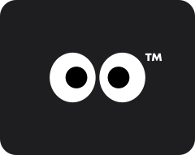

AI-ն ինչի՞դ ա պետք
Ո՞ր գործերն եք ուզում անել ավելի հեշտ ու արագ
Պատասխանեք մի քանի կարճ հարցի՝ հասկանալու համար, թե արհեստական բանականությունը՝ AI-ը, ինչպես կարող է օգնել հենց ձեզ։ Նախնական գիտելիքներ պետք չեն։ Վերջում կտեսնեք ձեր պատասխաններին համապատասխան գործնական առաջարկներ։
Հարցեր12
Էլ. հասցե կամ հեռախոսՊետք չէ
ՎերջումԱնհատական առաջարկ
Հարցումն իրականացնում է Lumiverse-ի «AI Քեզ Բան» թիմը։ Ձեր պատասխաններն օգտագործվելու են անհատական առաջարկներ կազմելու և մասնակիցների կարիքներն ամփոփ ուսումնասիրելու համար։ Խնդրում ենք չգրել գաղտնի տեղեկություններ կամ այլ մարդկանց անձնական տվյալներ։ Կապի տվյալներ թողնելը և դասընթացների մասին տեղեկություններ ստանալը կամավոր են։ Գաղտնիության ծանուցում